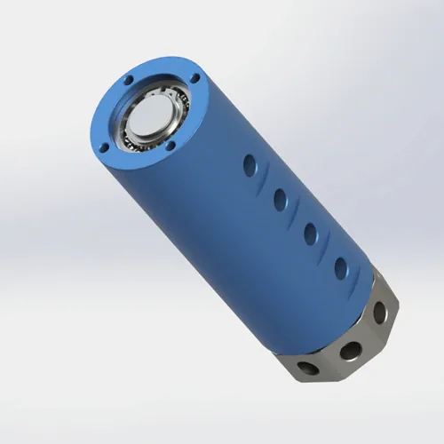

So wählen Sie eine pneumatische Drehdurchführung für Automatisierungsdrehtische und -schaltstationen aus: Mehrkanal-Lufttransfer, Schleifringintegration, Kanalzahlplanung und Dichtungsauswahl für die Indexierung vs. kontinuierliche Rotation. Basierend auf über 200.000 Einheiten der Begapunk Praxiserfahrung.
Für wen ist dies: Automatisierungsingenieure, Maschinenbauer und Systemintegratoren, die Rundschalttische- und Mehrstationenmontagegeräte entwerfen.
Auf einem Rundschalttisch benötigen mehrere Vorrichtungen Luft zu unterschiedlichen Zeiten - Klemmung für die Bearbeitung, Vakuum für die Teilaufnahme, Abblasen für die Entfernung von Trümmern und Sensorluft für die Positionsüberprüfung. Ohne Drehdurchführung braucht jede Vorrichtung ein eigenes Schlauchbündel, das sich innerhalb von Tagen verdreht, knickt und ermüdet. Eine Multikanal-Drehdurchführung fungiert als zentraler Verteiler: Die stationäre Seite ist an die Luftversorgung der Maschine angeschlossen, und die rotierende Seite verteilt Luft über unabhängige interne Kanäle an jede Station.
Die Herausforderung besteht nicht nur darin, Luft zu übertragen - es verhindert, dass 4-8 unabhängige Kanäle kreuzkontaminiert werden, während ein Gehäuse mit 30–50 mm-Durchmesser geteilt wird. Ein Leck zwischen Spannen und Vakuumkanälen bedeutet, dass der Greifer Teile fallen lässt. Ein Druckabfall im Abblasekanal hinterlässt Späne auf der Vorrichtung. Und wenn die Drehdurchführung versagt, stoppt der gesamte Indexierungszyklus und verschrottet die Produktionscharge.
Bei Begapunk machen Automatisierungs-Rotationstische rund 25% unseres Multi-Kanal-Drehdurchführungsumsatzes. Der häufigste Spezifikationsfehler ist nicht der Druck oder die RPM - es ist die Kanalzahl. Maschinenbauer geben genau die Kanäle an, die heute benötigt werden, ohne Platz für den Sensor oder Greifer, den der Kunde 12 Monate später hinzufügt.

Typische Anforderung2 bis 8 Kanäle für Klemm-, Vakuum-, Abblas- und getrennte Stationssteuerung auf Rundschalt-Drehscheibe.Karte jede pneumatische Funktion vor der Auswahl des Modells:
Regel: Zählen Sie jede aktuelle Funktion plus Ein Ersatzkanal. Das Hinzufügen eines Ersatzkanals ist jetzt billiger als das Ersetzen des gesamten Gelenks in 18 Monaten, wenn der Kunde einen neuen Greifer oder Sensor hinzufügt. Ein 5-Kanal-Joint kostet 15% mehr als ein 4-Kanal; das Ersetzen eines 4-Kanals durch einen 5-Kanal kostet 300% mehr.
Das Dichtungsmaterial hängt davon ab, wie sich der Tisch bewegt, nicht nur die maximale Drehzahl:
Bezugsnummer: Die SMRP-Richtlinien legen nahe, dass rotierende Dichtungen in Dauereinsatzanwendungen PTFE oder gleichwertige Hochtemperatur-Materialien mit einer Sicherheitsmarge von 20 bis 30 % für abgedichtete RPM verwenden sollten.
Viele Automatisierungstabellen benötigen sowohl pneumatische als auch elektrische Übertragung - Sensoren, Encoder oder Servosignale an den rotierenden Armaturen. Zwei Ansätze:
Kritisch: Überprüfen Sie den radialen Abstand. Eine 30 mm Bohrung Drehdurchführung plus ein 25 mm Schleifring benötigt insgesamt 60+ mm radialen Raum. Überprüfen Sie Ihr CAD-Modell, bevor Sie es angeben.
| Stationstyp | Gemeinsame Funktion | Auswahlschwerpunkt | Begapunk Richtung |
|---|---|---|---|
| Kleine Indexierungstabelle (4-6 Stationen) | Spannen, Freigabe, Abblasen | 2–3 Kanäle, Kompaktgehäuse, leichte Montage, FKM Dichtungen akzeptabel | BP-2P-0001 oder BP-3P-0004 |
| Mehrstationen-Karussell (8-16 Stationen) | Mehrere unabhängige Luftlinien | 4–8 Kanäle, geringe Leckage, Flanschmontage, Verdrehsicherung | BP-4P-30-0001 oder BP-8P-0001 |
| Sensorisch ausgestattete Station | Luft und elektrisches Signal Leitungsführung | Pneumatisch-elektrische Integration, Signalisolation, kompakte Hülle | BP-3P-S06-0001 oder kundenspezifisch pneumatisch-elektrisches Design |
| Hochgeschwindigkeiten — kontinuierlich rotierend | Kontinuierliche Klemmung und Betätigung | PTFE Dichtungen, 100–500 RPM ausgelegt, geringes Reibungsmoment | BP-2P-95-0001 (PTFE-Standard) oder kundenspezifisch Hochgeschwindigkeits- Ausführung |
Maschinenbauer geben genau die Kanäle an, die heute benötigt werden: Spannen, Lösen, Vakuum, Abblasen. Keine Reserven. Wenn der Kunde 12 Monate später einen Sensor oder einen neuen Greifer hinzufügt, muss die gesamte Drehdurchführung ausgetauscht werden - Demontage des Tisches, Re-Leitungsführungsschläuche und Wiederinbetriebnahme der Maschine. Regel: Fügen Sie immer einen Ersatzkanal hinzu. Eine 5-Kanal-Drehdurchführung kostet 15% mehr als ein 4-Kanal; das Ersetzen eines 4-Kanals durch einen 5-Kanal kostet 300% mehr Arbeit und Ausfallzeiten.
FKM (Fluorelastomer) Dichtungen sind für <200 RPM ausgelegt und funktionieren gut auf Rundschalttischen mit Verweilzeiten. Aber auf kontinuierlichen Rotationsstationen bei 300–500 RPM überhitzt und härtet FKM innerhalb von 2-3 Wochen aus. Die Dichtungslippe bricht, Luft leckt zwischen Kanälen und der Greifer lässt Teile fallen. Regel: PTFE Verbunddichtungen für jede Station oberhalb von 200 RPM oder mit kontinuierlicher Rotation angeben. PTFE verarbeitet die Wärme und hält ein geringes Reibungsmoment für eine präzise Indexierung bereit.
Automatisierungstische benötigen oft sowohl pneumatische als auch elektrische Übertragung. Ingenieure spezifizieren eine 40 mm Bohrung Drehdurchführung und einen 35 mm Schleifring und stellen dann fest, dass sie 80 mm radiales Spiel benötigen - aber die Tischnabe hat nur 60 mm. Das Ergebnis: eine Last-Minute-Sonderausführung, die die Lieferung um 4-6 Wochen verzögert. Regel: Überprüfen Sie die Radialfreiheit in Ihrem CAD-Modell, bevor Sie angeben. Begapunk bietet kostenlose 3D-STEP-Dateien für die Montageprüfung. Prüfen Sie die Freigabe, Anschlussrichtung und Verdrehsicherung Klammerposition vor der Bestellung.
Die Flanschmontage wird für Rundtische bevorzugt, da sie eine starre, vibrationsfeste Befestigung bietet. Die Verschraubung löst sich bei Teilungsstoßbelastungen nicht. Durchbohrungsoptionen (z. B. 30 mm Bohrung auf) BP-4P-30-0001Erlauben Sie Verkabelung, Schächte oder Kühlmittelleitungen, durch das Zentrum zu gehen - halten Sie die Maschinenhülle sauber und organisiert.
Die Verdrehsicherungshalterung verhindert, dass sich das stationäre Gehäuse mit dem Tisch dreht. Aber es muss ±2 mm Radialschwimmer für die Selbstausrichtung ermöglichen. Eine starre Halterung verriegelt die Drehdurchführung an Ort und Stelle und überträgt Tischfehlausrichtungen direkt auf die Dichtungen. Design-Tipp: Verwenden Sie ein geschlitztes Befestigungsloch oder eine Gummischeibe zwischen der Halterung und dem festen Rahmen, um ein Aufschwimmen zu ermöglichen.
Warten Sie nicht auf sichtbare Lecks oder Kanalkreuzkontamination. Zeitplan Dichtungswechsel basierend auf Zykluszahl:
Bewahren Sie Ersatzdichtungssätze am Arbeitsplatz auf. Ein 15-minütiger Dichtungswechsel wird zu einem 2-Stunden-Job, wenn der Techniker zu zentralen Geschäften gehen und die falsche Teilenummer entdecken muss.
Senden Sie Ihre Stationszahl, pneumatisches Stromkreisdiagramm, Druck, Drehzahl, Indexierungsverhalten und Montageraum. Begapunk kann bei der Auswahl eines Standardmodells helfen oder einen kundenspezifisch Kanal Ausführung mit 3D-Einbauprüfung entwerfen.
Gängige Funktionen umfassen Klemmen, Entklemmen, Vakuumaufnahme, Abblasen, Greifersteuerung, Sensorluft und pneumatische Aktuatorversorgung. Jede Funktion benötigt typischerweise einen eigenen unabhängigen Kanal, um Kreuzkontaminationen und Druckstörungen zwischen den Stationen zu verhindern.
Eine Mehrkanal-Drehdurchführung sollte gewählt werden, wenn unterschiedliche Luftfunktionen unabhängig bleiben müssen oder wenn mehrere Stationen separate Steuerleitungen benötigen. Eine gute Regel ist es, jede aktuelle Funktion plus einen Ersatzkanal für zukünftige Werkzeugänderungen zu zählen. Das Hinzufügen eines Ersatzkanals ist jetzt billiger als das Ersetzen der gesamten Drehdurchführung in 18 Monaten.
Ja, wenn die Kanal Ausführung richtig geplant ist. Jede unabhängige Luftfunktion sollte einen eigenen Kanal haben. Die Drehdurchführung fungiert als zentraler Verteiler: Die stationäre Seite ist mit der Luftversorgung der Maschine verbunden, und die rotierende Seite verteilt Luft über interne Kanäle auf jede Vorrichtung oder Station.
Ja. Begapunk bietet pneumatisch-elektrische integrierte Designs (z. B. BP-3P-S06-0001 mit 3 Luftkanälen + 6 Stromkreise). Wenn Signalzahl und Luftkanalzahl bekannt sind, kann eine kundenspezifisch Ausführung mit der richtigen Trennung zwischen pneumatischen und elektrischen Kanälen entworfen werden, um Interferenzen zu verhindern.
Der häufigste Fehler ist, keinen Ersatzkanal hinzuzufügen. Maschinenbauer geben genau die Kanäle an, die heute benötigt werden - Spannen, Lösen, Vakuum, Abblasen - ohne Raum für zukünftige Upgrades. Wenn der Kunde 12 Monate später einen Sensor oder einen neuen Greifer hinzufügt, muss die gesamte Drehdurchführung ausgetauscht werden. Ein weiterer häufiger Fehler ist die Verwendung von FKM Dichtungen an kontinuierlichen Rotationsstationen oberhalb von 200 RPM, was zu Überhitzung und Dichtungshärtung innerhalb von Wochen führt.
Technische Anmerkung: Alle Druckangaben und RPM-Spezifikationen, auf die in diesem Artikel verwiesen wird, basieren auf Begapunk BP-Baureihe Standard pneumatische Drehdurchführungen. Die tatsächliche Leistung hängt von den Betriebsbedingungen und Wartungspraktiken ab. Für Anwendungen außerhalb von Standardgrenzwerten konsultieren Sie die Konstruktionsabteilung vor der Spezifikation. Zuletzt aktualisiert: 11. Juni 2026.